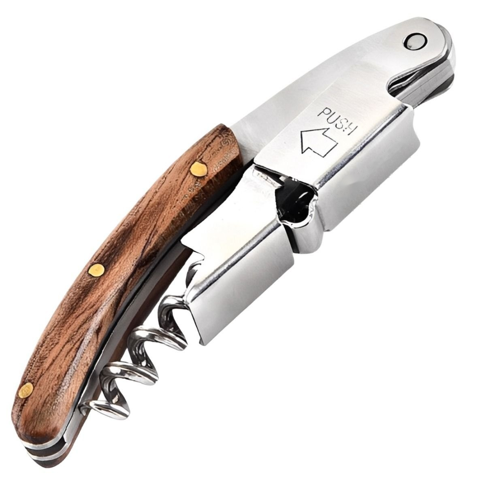
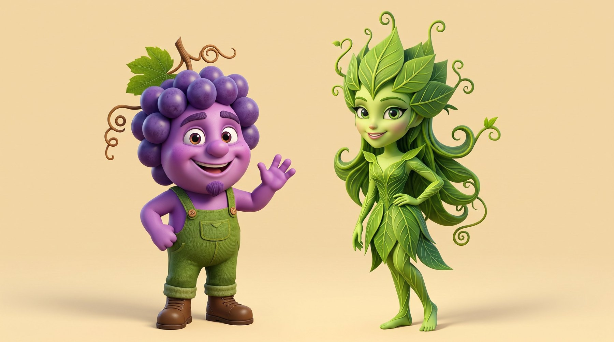
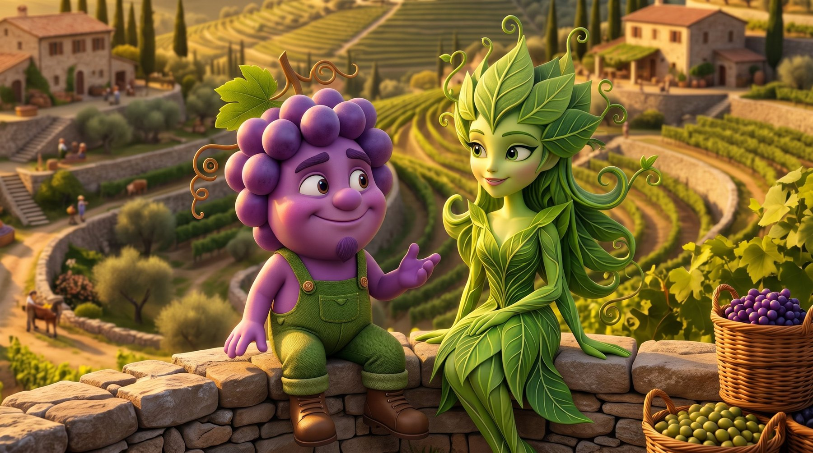
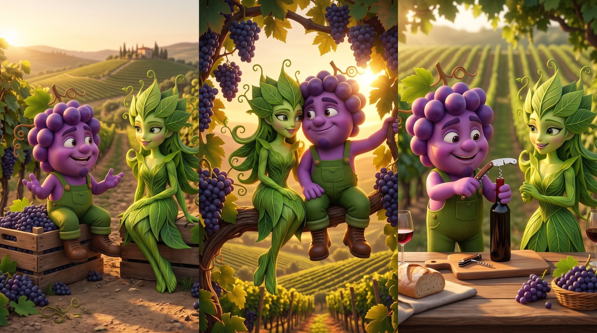
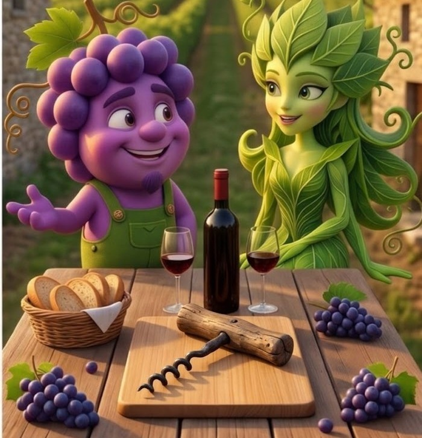
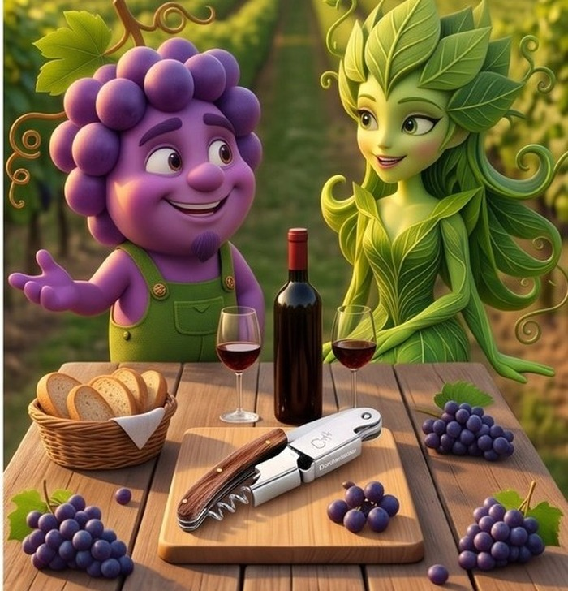
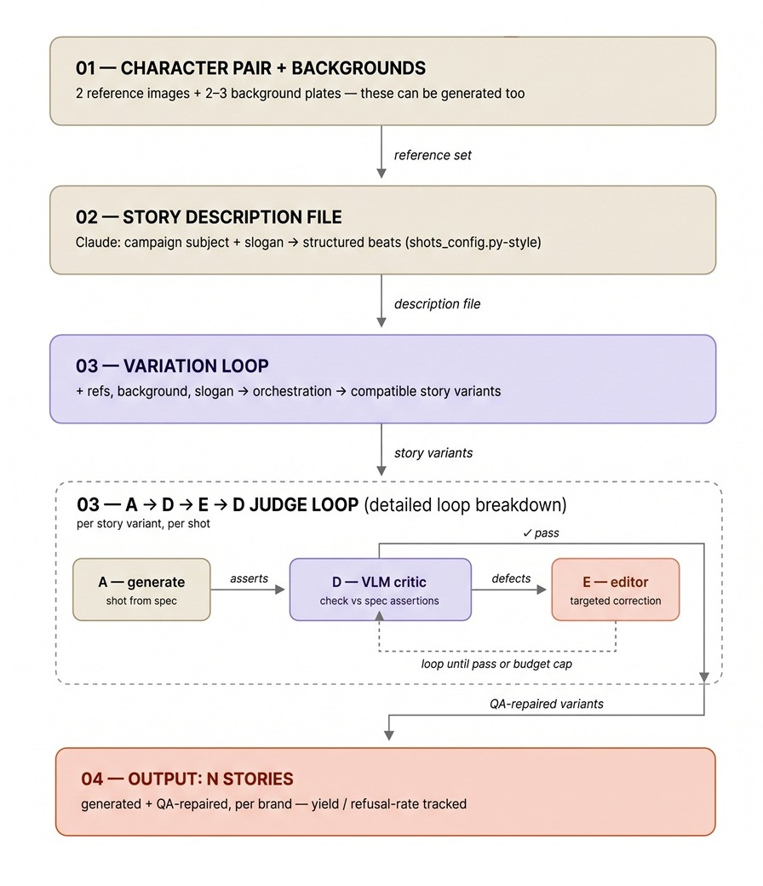
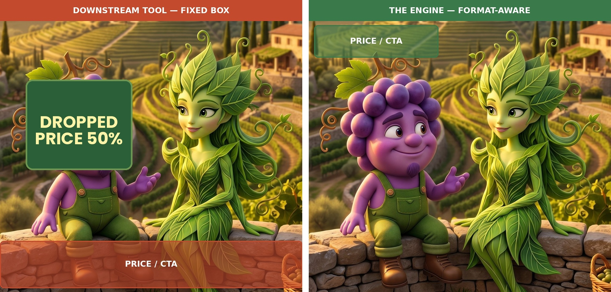

Claude + Gemini API · Dynamic Creative Optimization · ENGINE · RELEASE 1
Il motore: generazione, controllo, export
Un motore che prende una coppia di mascotte fissata, un brand, uno script e uno slogan, e genera molte varianti della storia coerenti col brand — poi verifica e corregge automaticamente ogni scatto rispetto a uno storyboard master approvato da una persona, così la coerenza regge su scala senza rivedere ogni fotogramma a mano.
Proponiamo un engine di generazione automatica storyboard, per campagne che hanno come protagonisti mascotte. Riepiloghiamo l'I/O. In ingresso: quattro input manuali — la coppia di mascotte (immagine neutra di riferimento), il brand o l'oggetto da promuovere, lo script che descrive la storia e gli slogan — scelti a monte, dal brand o dalla sua agenzia; tutto il resto, file di descrizione strutturato compreso, è generato. In uscita: N varianti della storia, con un meccanismo di controllo QA, e la formattazione di export rispondente alle piattaforme di AD-serving/DCO che integrano questo engine generativo. Questo post complementa l'esempio descrittivo del post precedente La vendemmia di Grappolotto e Foglina integrandolo con aspetti più tecnici. L'obbiettivo è quello di portare l'attenzione sul loop di autocorrezione automatico delle varianti rispetto a un master storyboard approvato da una persona (capitolo 05), la struttura dati del manifest e la sua firma umana finale (capitolo 06), fino alle proporzioni e agli spazi di formattazione secondo le specifiche di un template di riferimento (capitolo 07). Infine nell'ultimo passo, il batch delle informazioni di tutte le inquadrature, viene esportato nel Manifest rispetto al formato concordato con le piattaforme di AD-serving/DCO. Un aspetto che, dal pdv del mercato, viene approfondito nel post DCO: una Pipeline, Più Prodotti.
Dove si colloca il motore. Il brand o la sua agenzia di riferimento decidono il prodotto, slogan, personaggi e ambientazione, e chiamano il motore come passo di pre-produzione. Un direttore creativo o chi gestisce la campagna, spedisce un unico job — un brief, una coppia di personaggi già fissata, le ambientazioni — tramite API oppure come file JSON. Il motore genera un pool di varianti di storia già pronte, da cui viene prodotto l'Export. La storia (o meglio lo script) può essere scritta dal team creativo del brand, oppure creata dal motore a partire dal brief e poi approvata in modo supervisionato. Il risultato del processo entra poi nello stesso strumento di dynamic creative che il cliente usa già oggi (DCO e il mercato delle agenzie spiega come avviene quel passaggio); i formati della richiesta e dell'export sono specificati in Motore DCO: descrizione tecnica.Il prodotto pubblicizzato nell'esempio che seguirà è un cavatappi professionale in legno
Cos'è il Dynamic Creative Optimization
Il Dynamic Creative Optimization (DCO) è la pratica, nel performance marketing, di generare automaticamente molte varianti di un annuncio invece di affidarsi a un solo esempio statico, in modo da poter testare e ottimizzare una campagna su scala. Questo obiettivo ha preceduto l'AI di diversi anni — il DCO girava su ricombinazione attraverso template fin dalla pubblicità schedulata; ciò che l'AI ha cambiato, tra le altre cose, sono i livelli di scalabilità e di distribuzione su una maggiore varietà di piattaforme, l'ottimizzazione di quali varianti della storia potranno confluire in produzioni più vantaggiose di prodotti, feed-back in tempo reale, e altro (vedi le dot list seguenti).
Cosa fa.
- Produce automaticamente molte varianti di un'unica campagna — slogan diversi, staging diverso, customizzazioni regionali diverse — invece di affidarsi a un'unica versione approvata dall'agenzia e mandata in onda ovunque.
- Testa quelle varianti che rispondono sulla risposta reale del pubblico e sposta la spesa verso quelle che performano meglio, invece di indovinare in anticipo quale sarà più adatta.
- Nella sua forma basata su AI, trasforma ogni variante in una nuova immagine generata su richiesta, invece di ricombinare un set fisso di foto o clip già pronta — la forma più antica usata dal DCO per anni.
A chi è rivolto.
- Agenzie di performance marketing che fanno già DCO, ma che hanno bisogno di un modo per controllare la coerenza delle variazioni rispetto al brand senza rivederle a mano una per una.
- un brand CPG con presenza in decine di paesi ha tipicamente un personaggio o una campagna “master” ideata a livello centrale (global creative team), ma l’esecuzione in ogni mercato è delegata ad agenzie/uffici locali — per lingua, cultura, media buying, normative pubblicitarie locali. Essere d’accordo su cosa significhi "on-brand" vuol dire avere una definizione esplicita e controllabile di cosa rende quel personaggio riconoscibile come appartenente al brand.
- Vendor di infrastrutture AdTech e automazione creativa, che costruiscono e vendono questo tipo di pipeline ad agenzie invece di gestire campagne in prima persona.
- Campagne UGC e co-creazione su larga scala, dove il volume di revisione da solo rende il QA manuale fisicamente impossibile, non solo costoso.
- Ciascuno di questi quattro profili di acquirenti è approfondito, con casi reali, in DCO: una Pipeline, Più Prodotti.
Il contributo di oggi con l'AI.
- Prima dell'AI, il DCO significava ricombinare un set limitato di foto o clip già girate in disposizioni diverse — la varietà reale era limitata da quanto era stato girato in partenza.
- L'AI generativa rimuove quel limite: ogni variante può essere una nuova immagine o sequenza, costruita su misura invece che selezionata da un set fisso, il che è ciò che rende una storia completamente nuova delle mascotte — non solo un nuovo ritaglio o titolo — una variante realistica da generare.
- Il cambiamento di prospettiva AI crea però un nuovo collo di bottiglia: la generazione in sé non garantisce che una variante appena generata resti coerente con brand e personaggi. Il loop genera → giudica → correggi (vedi capitolo 05, Il judge automatico nel loop) serve proprio per colmare questa carenza.
-
01
Il prodotto e il claim della campagna

Il prodotto: un cavatappi professionale in legno L'oggetto da promuovere in questo esempio è un cavatappi professionale in legno de-brandizzato, perché il brand dietro di esso resta volutamente anonimo in tutto questo esempio, per motivi di copyright. I suoi componenti chiave - manico in legno, leva a cerniera, taglia-capsula, spirale - devono essere immediatamente riconoscibili in ogni variante delle immagini di cui è il soggetto. È un oggetto piccolo e meccanicamente preciso — con un discreto rischio di mostrarlo in modo inconsistente rispetto alle esigenze del brand — ed è esattamente per questo che è un buon banco di prova per il ciclo di check automatico dell'algoritmo descritto nei capitoli successivi. Il claim costruito attorno a esso è un claim da brand vinicolo: il marketing del vino si appoggia già a slogan stagionali e narrativi più che a elenchi di caratteristiche, il che si adatta a un motore il cui compito reale è rimettere in scena una storia attorno a uno slogan che cambia — i due usati più avanti sono “…la vendemmia ci regala un grande vino!” e “…fanno festa col buon vino!”.
-
02
La coppia di personaggi, il prodotto e gli sfondi
La campagna di riferimento coinvolge lo storyboard già visto in La vendemmia di Grappolotto e Foglina. L'input richiesto dal motore: una coppia di personaggi in due immagini — quella con le due mascotte isolate (immagine neutra) e quella con le mascotte inserite nell'ambiente vinicolo che fa da sfondo — più, quando il prodotto della campagna ha bisogno di un'identità visiva fissata invece di un ripiego generico, una sua immagine di riferimento a parte (il caso del cavatappi qui sotto). L'immagine neutra della coppia viene presa come riferimento, e ha un doppio ruolo, come vedremo nel capitolo 05, Il judge automatico nel loop:
1. Riferimento di identità — fissa l'aspetto dei due personaggi: è contro questa che D controlla l'identity drift (il personaggio generato assomiglia davvero a Grappolotto/Foglina?).
2. Riferimento di staging — fissa anche chi sta a sinistra e chi a destra come convenzione canonica, quella stessa che poi ricompare come campoLEFT:/RIGHT:nel file di descrizione strutturato (capitolo 03, un campo per ogni beat) e che D ricontrolla per l'allineamento spaziale (capitolo 05: “confermare che un personaggio sia correttamente aLEFT:piuttosto che aRIGHT:”).
La stessa logica vale per il prodotto pubblicizzato: una volta che ha la propria immagine di riferimento, il loop genera→judge→correggi ne controlla identità, posizione e contesto in ogni beat esattamente come fa per i personaggi — non solo che sia l'oggetto giusto (il caso di wrong object nel capitolo 05), ma anche che sia messo in scena nel modo giusto.
Le ambientazioni degli altri fotogrammi saranno ottenute senza l'esigenza di altre immagini in input, ma in base alla descrizione dell'immagine stessa, e usando come referenti sempre l'immagine neutra delle due mascotte isolate. Le mascotte di riferimento potrebbero essere generate (con le API di Google Gemini, in questa release), oppure commissionate a un servizio esterno. Non è questo un punto nodale in questo post, semmai quello di mostrare la facilità di affidarsi a un setup risolvibile in un giorno, piuttosto che a una commissione illustrativa di settimane.


LEFT:/RIGHT: come nel resto del sito. A destra: la stessa coppia nello sfondo da vigneto, l’ambientazione in cui verranno messe in scena le storie.
-
03
La storia come file di descrizione strutturato
Il motore ha bisogno della storia in una forma strutturata, non come prosa libera: una voce per ogni beat (inquadratura), con i suoi personaggi e la loro posizione
LEFT:/RIGHT:, lo sfondo, il prodotto o l'oggetto in scena, il ruolo narrativo (inizio, rivelazione, chiusura) e le eventuali condizioni di scena, come pioggia o sole. Chi crea la campagna non deve compilare tutto questo: gli input manuali sono solo quattro — la coppia di mascotte nell'immagine neutra, il brand o l'oggetto da promuovere, lo script che descrive la storia e gli slogan. Il resto è generato: Claude (o l'LLM usato) struttura lo script nel file di descrizione e ne riempie tutti i campi, e una persona lo controlla, invece di scriverlo a mano shot per shot. Un esempio del file che contiene queste informazioni, e la funzione che lo produce, sono in Motore DCO: descrizione tecnica, capitolo 02. -
04
Tipi di variante e orchestrazione: un solo cast, molte storie compatibili
Due tipi di variante. Tipo A — varianti di script: ciascuna è una storia diversa, scritta da una persona come script a sé (per esempio: Grappolotto e Foglina si sposano; poi hanno un bimbo). Ogni script diventa il proprio file di descrizione, che passa poi per il loop genera→judge→correggi (capitolo 05). È ciò che copre la prima release. Tipo B — sotto-varianti: episodi minori che si staccano da una storia di tipo A, e che il motore potrebbe proporre in automatico2 (arrivano altri animaletti; il bimbo gioca con le galline e il gallo è geloso; arriva un cugino di Grappolotto, un tipo di città che gestisce la banca della cooperativa dell'uva — storie in stile Disney anni '50-'60). Ogni proposta avrebbe il proprio file di descrizione, ma solo dopo un controllo di story consistency sul testo, prima di generare qualsiasi immagine (vedi capitolo 05). Il tipo B è uno sviluppo futuro, non fa parte della prima release.
Chi orchestra, in pratica. Qui l'orchestrazione non è un controllo scritto a mano riga per riga: è un agente coordinatore che lancia, per ogni variante, un passaggio del loop genera→judge→correggi (capitolo 05), passandogli sempre gli stessi riferimenti fissati — personaggi e prodotto (capitolo 02), sfondo — e si limita a verificare che ogni esecuzione torni con lo stesso cast e lo stesso mondo, solo messo in scena in modo diverso.

-
05
Il judge automatico nel loop: A→D→E→D e i suoi limiti
Ogni passaggio del loop genera→judge→correggi (A→D→E→D)1 parte da ciò che per quella variante è già fissato — il suo file di descrizione, il master storyboard (approvato da un controllo umano, il riferimento rispetto a cui si costruiscono e si misurano le varianti), i riferimenti dei personaggi e del prodotto (capitolo 02) e lo sfondo — e ne produce lo storyboard: stesso cast e stessa ambientazione, seguendo le regole di coerenza fissate nei capitoli 02 e 03. Lo slogan accompagna come testo di appoggio, ma non costruisce lo storyboard: da solo lascerebbe al modello troppo margine per inventare scene che non stanno insieme. Il compito dell'orchestrazione è quello di mantenere ogni variante compatibile — stessi personaggi, stesso mondo — con uno staging che segue il proprio file di descrizione, non lo slogan.
Due classi di errore, due responsabili diversi. La prima: conformity errors e hallucination — identity drift, un oggetto sbagliato, un prodotto deformato, un personaggio in più che non appartiene al cast. È compito di D, controllato shot per shot contro il file di descrizione e il master, ed è anche il terreno più solido per D: la ricerca sull'uso di un LLM o VLM come judge per la generazione di immagini mostra che si allinea bene al giudizio umano su esiti così chiaramente falliti. D è più debole sull'allineamento spaziale fine — confermare che un personaggio sia correttamente a
LEFT:piuttosto che aRIGHT:del fotogramma — ed è esattamente lì che la calibration qui sotto si guadagna il posto. La seconda classe di errore è un problema del tutto diverso: la semantic quality del plot — la storia promuove davvero il brand? È una scelta di creative direction a monte, decisa e approvata da una persona quando il master storyboard viene fissato, mai un giudizio che D fa durante il loop. Per le sotto-varianti di tipo B (capitolo 04, sviluppo futuro) questo passaggio non sarebbe lasciato interamente a una persona: un loop di story consistency, che funziona come D ma sul testo prima che esista qualsiasi immagine, controllerebbe ogni sotto-variante proposta contro il master storyboard e le regole del cast, e la rimanderebbe a riscrivere se le contraddice. Controlla la coerenza, non la forza persuasiva: se la storia promuove davvero il brand resta una firma umana. Un VLM più forte alza la qualità della generazione, ma non sposta questa seconda linea: la conformità resta qualcosa che D può controllare, la qualità della storia resta una scelta umana.Calibration. In pratica significa che il supervisore ricontrolla a intervalli un campione di shot che D ha già approvato — non una revisione di tutto. Per esempio: se D continua ad approvare un'inquadratura in cui Foglina finisce a sinistra invece che a destra, una volta che l'errore si ripete abbastanza spesso nel campione diventa un esempio di calibration — l'immagine, il verdetto corretto, il motivo — aggiunto al prompt di D come caso da cui imparare. Dal campione escono anche due numeri utili da seguire: l'agreement rate (quanto spesso D e il supervisore sono d'accordo) e il false-pass rate (quanto spesso D lascia passare uno shot sbagliato). Oggi questo ciclo — campionare, misurare, aggiungere l’esempio — si fa a mano; tracciarlo in automatico da una release all’altra è un passo successivo, non ancora parte di questa pipeline.
Una modalità alternativa: best-of-N. Il loop di default è pass/fail più repair: D boccia un'inquadratura, E corregge solo ciò che è stato segnalato. Questa release offre anche un'altra opzione: generare N candidate per lo stesso beat e lasciare che un VLM le classifichi (ranking) contro il master storyboard, tenendo la migliore invece di correggere l'unica inquadratura generata. Prendiamo il beat della rivelazione del prodotto, con Grappolotto e Foglina vicini sopra il cavatappi: è esattamente lì che uno scivolone di staging — un braccio nel posto sbagliato, il prodotto inclinato — è insieme più probabile e più facile da notare. Generare tre o quattro candidate e scegliere la più pulita costa più chiamate API per shot, ma su un beat così ne vale la pena.
Una correzione reale, passo per passo. Un caso di wrong object — l'altro conformity error che D è costruito per intercettare, sul prodotto anziché sul cast. Per lo shot principale della campagna — quello con cui si apre La vendemmia di Grappolotto e Foglina, che promuove un prodotto preciso, un cavatappi professionale in legno — una prima generazione pesca un cavatappi generico e piuttosto grezzo dal repository di asset del motore, invece di quello brandizzato per cui esiste l'intera campagna. D lo segnala rispetto al master: il file di descrizione nomina esattamente quel prodotto, non un ripiego preso dal repository. E corregge rigenerando la zona dell'oggetto con il cavatappi corretto — stessa inquadratura, stessi personaggi, stesso tavolo. La versione corretta è quella pubblicata come immagine principale della campagna.


Confrontato con una persona che faccia a mano lo stesso controllo:
- Pro — scala: controlla ogni variante con lo stesso standard, che sia la variante 1 o la 400; l'attenzione e gli standard di un revisore umano deviano su un batch lungo in un modo che i criteri del judge non fanno.
- Pro — velocità: un difetto viene segnalato e rimandato in correzione nel tempo di una nuova esecuzione del loop, non nel tempo che ci vuole perché arrivi il suo turno in una coda di revisione umana.
- Con — costo: ogni controllo automatico resta comunque una chiamata API per shot, lineare col volume; non è gratuito solo perché non coinvolge una persona (dettagli in DCO: modello dei costi).
Cosa resta aperto. Un master storyboard e un loop di calibration risolvono la coerenza all'interno di una variante, non tra le varianti di un batch: nulla qui controlla la variante 12 rispetto alla variante 1 una volta che entrambe, singolarmente, superano il controllo di D contro il master — un ruolo aperto del "revisore di campagna" che questa pipeline non risolve ancora.
Il diagramma completo

- Passo 1: Una coppia di personaggi, una/più img del prodotto, più eventualmente due o tre sfondi — anche questi fotogrammi di riferimento possono essere generati invece che commissionati.
- Passo 2: La storia, generata automaticamente dal soggetto oppure scritta a mano, strutturata come file di descrizione (se scritta a mano, occorre una riformattazione standard di un LLM) — una voce per ogni beat, con i suoi personaggi, la loro posizione e il loro ruolo narrativo. Oltre alle loro interazioni con l'immagine del prodotto, quando presente.
- Passo 3: Un loop che genera variazioni della storia: in input il file di descrizione, le immagini dei personaggi e del prodotto e lo sfondo, con lo slogan come testo di appoggio; l'orchestrazione produce varianti di storia compatibili, messe in scena come definito nel file di descrizione. Dettagli: Il loop A→D→E→D e la sua avvertenza sull'affidabilità del giudice automatico — forte sulla deriva grossolana di identità, più debole sull'allineamento spaziale fine — .
- Passo 4: Output: N varianti di storia generate e corrette via Controllo qualità (QA) per un brand — sequenze complete beat per beat, non singole immagini. Quanto costa davvero produrre N varianti — compresi tasso di scarto e inefficienze varie — è nella pagina di DCO: modello dei costi.
- Oltre il motore — due aspetti dell'export
- Passo 5: Proporzioni e zone riservate: ogni inquadratura approvata viene ricomposta nelle proporzioni che i formati pubblicitari chiederanno, tenendo il cast dentro il campo e lasciando libero il rettangolo che il template occuperà.
- Passo 6: Export: il batch diventa un manifest strutturato — una riga per inquadratura, proporzione e slogan, con ID univoco, etichette di variante e stato QA — più gli adattatori che lo integrano nella piattaforma già in uso (vedi capitolo 06).
-
06
Export: dal pool al feed
Un pool di immagini approvate non è ancora sufficiente per un DCO platform, occorre aggiungere un layer di export: ossia trasformare il run del diagramma in figura, in un Manifest strutturato, dove ogni riga è un'unità deliberabile — una inquadratura, in una proporzione, per uno slogan. Una storia di sei beat, con tre slogan e quattro proporzioni, produce 72 righe: è esattamente la moltiplicazione che in agenzia si usa fare spesso a mano.
Il manifest è uno e canonico. Il motore non scrive mai direttamente il formato di questo o quel fornitore: scrive tutto quello che ha usato nel batch, e un adattatore seleziona e rinomina le colonne per la destinazione. Aggiungere una destinazione vuol dire scrivere un adattatore. Il primo adattatore segue lo schema a feed già descritto in DCO e il mercato delle agenzie: un ID univoco per riga, una URL immagine, i testi di headline e CTA, una URL di uscita. Elenchiamo i campi del Manifest:- asset_id — l'identificatore con cui il motore DCO chiamerà l'immagine. La convenzione è scriverle in questo ordine — brand-storia-slogan-beat-proporzione — perché quando un report segnala un problema, l'ID dice già dove guardare.
- brand, linea_prodotto — le chiavi che tengono insieme un catalogo multi-prodotto (vedi DCO: una Pipeline, Più Prodotti).
- storia, beat, ruolo_narrativo — da dove viene l'inquadratura e che funzione ha nella sequenza: apertura, sviluppo, chiusura. Serve perché una CTA non va messa sopra un beat di apertura.
- cast — chi è in scena, per filtrare un batch per personaggio.
- proporzioni, zona_riservata — le proporzioni e il rettangolo che il template può occupare senza coprire un volto (capitolo 07).
- etichette_variante — che cosa ritrae la scena: meteo:pioggia, momento:sera, occasione:nascita. È la colonna concettualmente decisiva: qui si dichiara che cos'è l'immagine, non chi deve vederla. La selezione resta alle regole della piattaforma.
- stato_qa — Il controllo qualità: passato al primo tentativo, corretto, o scartato (con il motivo di scarto). Le righe scartate restano nel manifest per tracciabilità, ma non entrano nel feed.
- stato_revisione — l'approvazione umana finale su brand e conformità, che resta una firma umana.
Dallo stesso Manifest escono due report. Il primo è la copertura: per ogni combinazione chiesta dal brief — slogan per etichetta per proporzione — esiste almeno una riga approvata? L'incongruenza deve apparire prima della consegna, non dopo. Il secondo è il conto del batch: righe generate, approvate, scartate, e tempo macchina speso. Sono le metriche di produzione di cui tratta la pagina di presentazione.
Una nota di progetto: asset_id e etichette_variante sono anche l'aggancio che renderebbe possibile, in seguito, leggere i report della piattaforma per ID ed escludere le varianti di bassa performance. -
07
Proporzioni e zone riservate
La stessa inquadratura approvata deve essere esportata in più proporzioni — 1:1, 4:5, 9:16, 16:9 — come richiesto dalle piattaforme ADV. La parte meccanica è semplice: si ritaglia dove il contenuto lo consente, si estende lo sfondo dove il ritaglio sarebbe dannoso per il cast/prodotto, il 'Giudice' del capitolo 05 (ossia il controllore automatico del loop) ricontrolla il fotogramma riformattato, perché l'identità deve reggere anche dopo un ritaglio o un'estensione. La stessa informazione sulla posizione dei personaggi permette l'operazione inversa, che è quella che conta di più: comporre la scena lasciando libero il rettangolo dove il template scriverà titolo, prezzo e CTA. Uno strumento a valle non può farlo — quando riceve l'immagine la scena esiste già, e le informazioni utili rischiano di essere coperte al lettore (vedi immagine in basso).
Perché funzioni, al motore serve un ingresso che da solo non ha: la geometria dei template effettivamente in uso presso il cliente — quale rettangolo, in quale proporzione. In pratica, la messa in scena a rettangolo riservato deve attendere la geometria dei template di un cliente reale per essere messa alla prova. Per il conteggio delle chiamate API, i costi per immagine e il meccanismo tabella-di-configurazione/file-di-descrizione dietro entrambi gli stadi, vedi DCO: modello dei costi.

Capitolo 07 — stesso ritaglio, due strategie di posizionamentoLa stessa inquadratura approvata, con la coppia intera nel campo in entrambi i pannelli. A sinistra: una posizione fissa del box prezzo/CTA, portata invariata da un altro layout — finisce proprio sopra gli stivali del personaggio. Un altro banner, più invadente, finisce sul volto. A destra: il motore dimensiona e piazza lo stesso box dove la scena composta è libera, perché conosce la posizione dei personaggi. Il disallineamento mostrato qui per un ritaglio si ripresenta anche in altre immagini, soltanto in punti diversi.
- Il loop A→D→E→D è il ciclo genera–giudica–correggi su cui gira l'intera pipeline, descritto anche in DCO: una Pipeline, Più Prodotti. A genera un'inquadratura a partire dal suo file di descrizione strutturato. D, un judge VLM basato su Gemini, verifica il risultato asserzione per asserzione — il personaggio LEFT: ha ancora i suoi tratti distintivi, la posa corrisponde al file di descrizione, e così via — ed elenca eventuali difetti per gravità. E modifica l'inquadratura per correggere solo ciò che D ha segnalato, senza rigenerarla da zero. D ricontrolla poi l'inquadratura corretta, e il ciclo si ripete finché non passa o non raggiunge un limite massimo di tentativi. Il loop gira una volta per inquadratura, quindi una singola variante di storia con più inquadrature lo esegue più volte. ↩
- La capacità dei modelli diffusion/transformer oggi consiste nel descrivere un'immagine in forma molto più dettagliata rispetto agli elenchi nominali espressi dal prompt: personaggi non menzionati vengono aggiunti per coerenza con il quadro scenico (es.: una fattoria, un gruppo di pecore al pascolo, una festa di paese, ecc.). Un fenomeno analogo si ritroverebbe nella costruzione delle varianti, viste come variabili casuali di personaggi/oggetti — ogni volta diversi, ma comunque coerenti con il quadro scenico e rispettosi del messaggio pubblicitario. ↩
FAQ
Cos'è il ciclo genera → giudica → correggi (A→D→E→D)? A genera un'inquadratura rispetto a una sua descrizione strutturata; D è un giudice VLM, funziona come controllore ed elenca i difetti per gravità; E modifica solo le regioni segnalate da D; D infine le riverifica, e il ciclo si ripete finché l'inquadratura non raggiunge una parità con l'immagine voluta (quella descritta nelle specifiche) o si raggiunge il limite di tentativi.
Come fa il motore a mantenere i personaggi mascotte coerenti col brand su centinaia di varianti? Ogni variante viene verificata rispetto allo stesso storyboard master approvato da una persona e alle stesse immagini di riferimento fissate per personaggi/prodotto — D individua le differenze d'identità, l'oggetto sbagliato, o un personaggio in più che non appartiene al cast, scatto per scatto.
Cosa deve fornire davvero un brand? Solo quattro input manuali: la coppia di mascotte come immagine di riferimento neutra, il brand o l'oggetto da promuovere, lo script (ossia il testo della sceneggiatura, in linguaggio verbale e senza vincoli di controllo), e gli slogan. Tutto il resto — incluso il file di descrizione strutturato — viene generato.
Questo può sostituire del tutto una revisione creativa umana? No. Il giudice (D) individua solo errori di conformità — deriva d'identità, oggetti sbagliati, regole spaziali violate. Se la storia è precisamente quella che deve esprimere quel brand resta una decisione umana, presa quando lo storyboard master viene ultimato e deciso.
Correlati: Storyboard Automatico: ecco Pannocchino e Spighetta e Pannocchino e Spighetta hanno un bebè per lo stesso motore applicato a un'altra coppia di mascotte.